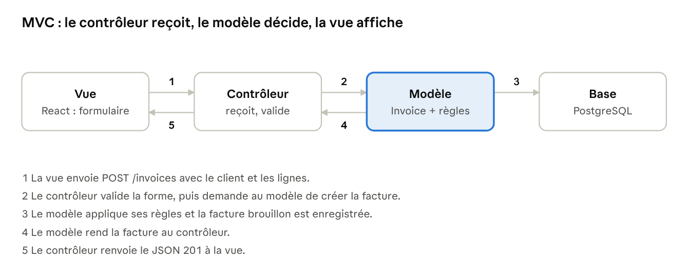
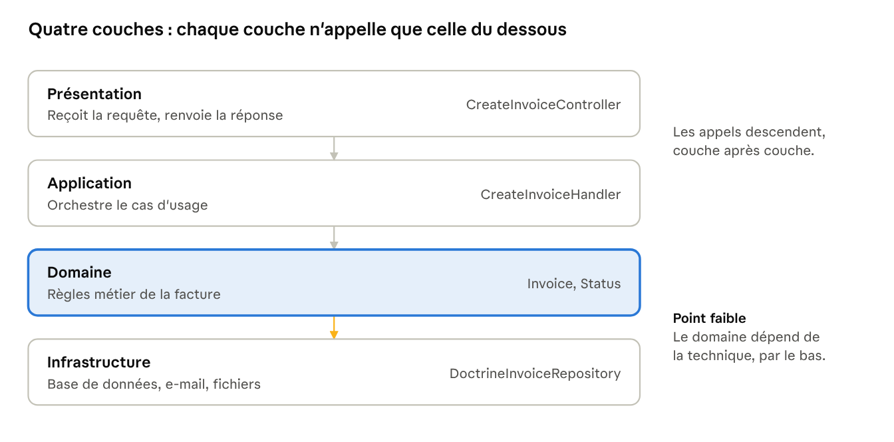
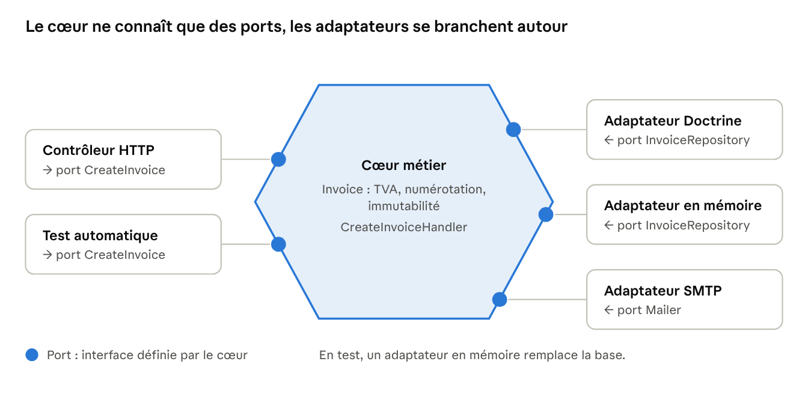
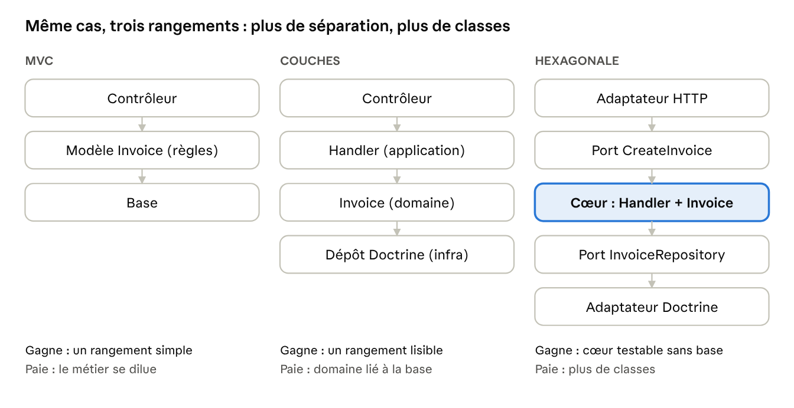
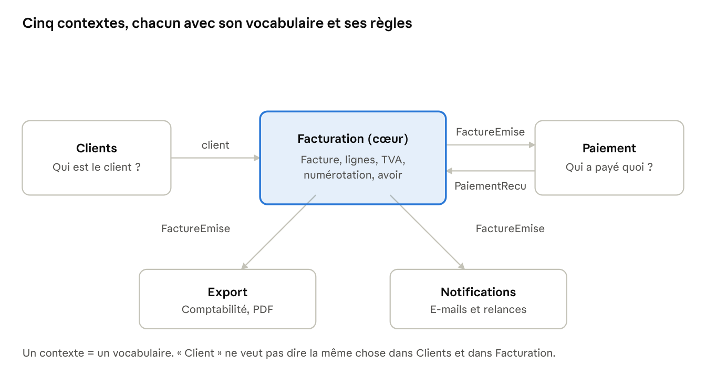
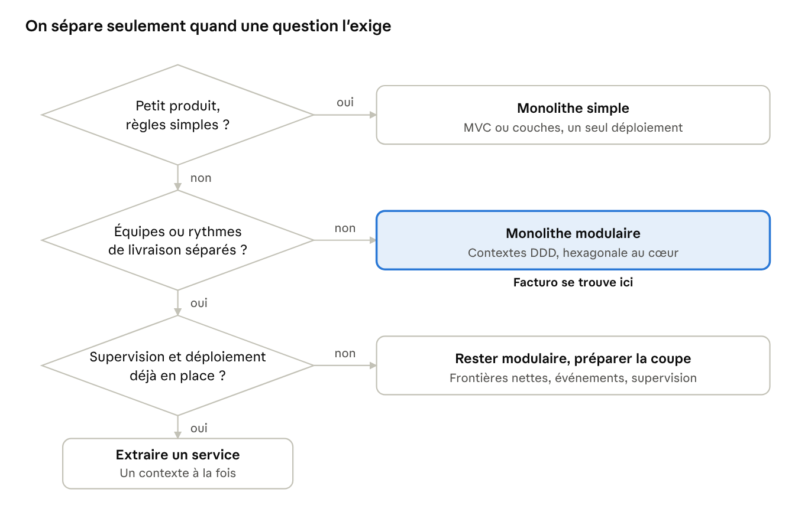
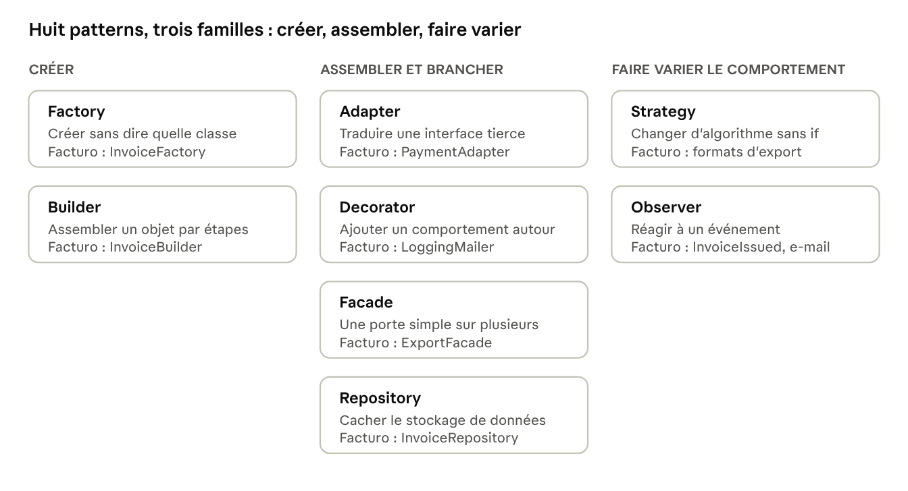
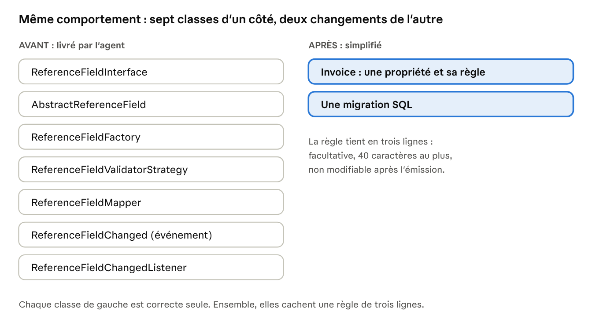

Module 3 : architectures et design patterns
Ce que vous saurez faire
Une architecture est la façon dont on range le code : où vit chaque règle, qui a le droit d'appeler qui. Un agent choisit une architecture par défaut, souvent la plus courante dans ses données d'entraînement, pas la plus adaptée à votre produit. Votre rôle est de choisir, de l'écrire, puis de vérifier qu'elle est suivie.
À la fin du module, vous saurez :
- expliquer MVC, l'architecture en couches et l'architecture hexagonale sur un même cas : créer une facture ;
- lire un schéma d'architecture et dire où doit vivre une règle métier ;
- découper un produit en contextes avec les idées de base du DDD ;
- choisir entre monolithe modulaire et microservices avec des critères, pas par mode ;
- reconnaître huit design patterns dans du code PHP ;
- repérer la sur-ingénierie et la faire retirer.
| Prérequis | Les modules 1 et 2 : trajet d'une requête, lecture de code, signaux de mauvais code. |
| Durée estimée | 12 heures, sur deux semaines. |
| Lien avec Facturo | Facturo est un monolithe modulaire Symfony : Clients, Facturation, Paiement, Export, Notifications. Tous les exemples en viennent. |
| Matériel | Papier et crayon pour redessiner chaque schéma de mémoire. C'est la meilleure façon de le retenir. |
Chaque architecture est montrée sur le même cas, pour que vous compariez des formes et non des histoires différentes.
Leçon 3.1 · MVC : la base que tout le monde connaît
Sans architecture écrite, chaque session d'agent range le code à sa façon. Les premières fonctionnalités passent. Les suivantes coûtent de plus en plus cher, car personne ne sait plus où est quoi. Une architecture répond à une seule question : où vit chaque règle ?
MVC (Modèle, Vue, Contrôleur) est la plus répandue. Le modèle contient les données et les règles. La vue affiche. Le contrôleur fait le lien : il reçoit la requête, appelle le modèle, choisit la réponse. Dans Facturo, la vue est l'application React, le contrôleur est une classe Symfony, le modèle est l'entité Invoice.
Prenons notre cas fil rouge : créer une facture brouillon.

Lire le schéma
- Suivez les chiffres dans l'ordre. Les flèches du haut vont vers la base, celles du bas reviennent.
- Le contrôleur est au milieu : tout passe par lui. C'est sa force (un seul point d'entrée) et son risque (il peut grossir).
- La boîte colorée est le modèle. C'est là que doivent vivre les règles : une facture vide est refusée, le total est calculé.
- La base n'est connue que du modèle. La vue ne parle jamais à PostgreSQL.
Ce que cela donne en code
Le contrôleur reste court : il traduit la requête en appel et le résultat en réponse.
#[Route('/invoices', methods: ['POST'])]
public function create(CreateInvoiceRequest $req): JsonResponse
{
$invoice = Invoice::draft($req->clientId, $req->lines);
$this->em->persist($invoice);
$this->em->flush();
return $this->json($invoice, 201);
}Les règles sont dans le modèle.
public static function draft(int $clientId, array $lines): self
{
if ($lines === []) {
throw new EmptyInvoice();
}
$invoice = new self($clientId, Status::Draft);
foreach ($lines as $line) {
$invoice->addLine($line);
}
return $invoice;
}Forces et limites
| MVC | |
|---|---|
| Forces | Simple à expliquer. Tous les frameworks le proposent. Convient très bien à un petit produit. |
| Limites | Il ne dit rien de l'organisation du métier quand il grossit. Le « modèle » devient un sac de tout. |
| Piège typique | Contrôleur gras : les règles glissent dans le contrôleur parce que c'est là que l'agent écrit le plus vite. |
| Piège inverse | Modèle anémique : l'entité n'a que des accesseurs et toute la logique est ailleurs. |
| Quand il suffit | Une application de gestion simple, un prototype, une équipe d'une ou deux personnes. |
Pour repérer le contrôleur gras, comptez : plus de dix lignes, un if métier, un calcul d'argent ? C'est la leçon 2.2 du module 2 (logique au mauvais endroit).
À retenir
- MVC répond à : qui reçoit, qui décide, qui affiche.
- Le contrôleur traduit. Le modèle décide. Si le contrôleur décide, il y a dérive.
- MVC ne s'occupe pas de l'organisation d'un métier complexe : il faut alors une structure en plus.
Erreurs fréquentes
- Croire que MVC dispense de réfléchir à où mettre les règles.
- Laisser grossir une seule classe
InvoiceControllerqui gère tout le module. - Confondre la vue (ce qu'on affiche) avec le format de réponse de l'API : le JSON n'est pas une vue métier.
Leçon 3.2 · L'architecture en couches
MVC range la requête. L'architecture en couches range le métier. On empile des niveaux, chacun avec une tâche, et une règle simple : une couche n'appelle que celle qui est juste en dessous.
Sur le même cas, créer une facture brouillon, voici comment Facturo se range.

Lire le schéma
- Lisez de haut en bas : la requête descend, la réponse remonte par le même chemin.
- Chaque boîte donne son rôle et, à droite, la classe de Facturo qui l'incarne.
- La boîte colorée est le domaine : l'endroit où vivent les règles (numérotation, TVA, immutabilité).
- La dernière flèche est orange : elle montre le point faible de ce modèle. Le domaine finit par connaître la technique qui est en dessous.
Le code, couche par couche
La couche de présentation ne fait que traduire.
public function create(CreateInvoiceRequest $req, CreateInvoiceHandler $handler): JsonResponse
{
$invoice = $handler(new CreateInvoice($req->clientId, $req->lines));
return $this->json($invoice, 201);
}La couche application orchestre le cas d'usage, sans règle de calcul.
final class CreateInvoiceHandler
{
public function __construct(private DoctrineInvoiceRepository $invoices) {}
public function __invoke(CreateInvoice $cmd): Invoice
{
$invoice = Invoice::draft($cmd->clientId, $cmd->lines);
$this->invoices->save($invoice);
return $invoice;
}
}Le domaine (Invoice::draft) est identique à celui de MVC. Regardez le type du constructeur : DoctrineInvoiceRepository est une classe concrète. Pour tester ce service, il faut une vraie base. C'est le point faible du schéma.
Ce qui va où, ce qui ne doit jamais s'y trouver
| Couche | Elle contient | Elle ne doit pas contenir |
|---|---|---|
| Présentation | Lecture de la requête, format de la réponse, codes HTTP | Une règle métier, une requête SQL |
| Application | L'enchaînement d'un cas d'usage, les transactions | Un calcul de TVA, du HTTP |
| Domaine | Les règles et les objets métier | Du HTTP, du SQL, un appel d'e-mail |
| Infrastructure | Base de données, e-mails, fichiers | Une décision métier |
Repérer les violations en relecture
- Un
use Symfony\Component\HttpFoundation\Requestdans le domaine : le métier connaît HTTP. - Un
use Doctrine\...dans le domaine : le métier connaît la base. - Un contrôleur qui appelle directement le dépôt, en sautant la couche application.
- Un appel qui remonte : l'infrastructure qui appelle un contrôleur.
Une commande suffit pour vérifier la première violation :
grep -rn "use Doctrine" src/Facturation/Domain/Si elle renvoie quoi que ce soit, le domaine dépend de la base.
Forces et limites
- Forces. Chaque niveau se comprend seul. Un agent comprend facilement la consigne « ne mets rien de métier dans le contrôleur ».
- Limites. Pour une action simple (lire un client), on traverse quatre couches pour rien. Et le domaine reste lié à l'infrastructure, comme le montre la flèche orange.
À retenir
- Les couches rangent le métier : présentation, application, domaine, infrastructure.
- La règle : une couche n'appelle que celle du dessous, jamais vers le haut.
- Le domaine ne doit importer ni HTTP, ni la base. Une recherche dans les
usesuffit à le vérifier.
Erreurs fréquentes
- Appeler le dépôt directement depuis le contrôleur parce que « c'est plus court ».
- Mettre les règles dans la couche application : elle devient un second contrôleur.
- Créer quatre classes pour un simple
GETqui lit un champ.
Leçon 3.3 · L'architecture hexagonale, puis les trois côte à côte
Le point faible des couches est le sens de la dépendance : le domaine appelle la base. L'architecture hexagonale, aussi appelée ports et adaptateurs, inverse ce sens. C'est le « D » de SOLID du module 2.
Le cœur métier écrit lui-même les interfaces dont il a besoin : les ports. Tout ce qui est technique (HTTP, base, e-mail) se branche de l'extérieur par un adaptateur qui implémente un port. Le cœur ne connaît jamais un adaptateur.

Lire le schéma
- Au centre, le cœur : les règles de Facturo et le cas d'usage. Il ne connaît ni HTTP, ni PostgreSQL.
- Les ronds sur le bord sont les ports. Un port est une interface écrite côté cœur.
- À gauche, ceux qui pilotent l'application : le contrôleur HTTP, et aussi un test automatique.
- À droite, ceux que le cœur utilise : la base, l'e-mail. Le même port accepte un adaptateur Doctrine en production et un adaptateur en mémoire en test.
Le code
Le port est une interface écrite dans le domaine.
interface InvoiceRepository
{
public function save(Invoice $invoice): void;
public function get(int $id): Invoice;
}Le cas d'usage ne connaît que le port. Comparez avec la leçon 3.2 : le type du constructeur est devenu l'interface.
final class CreateInvoiceHandler
{
public function __construct(private InvoiceRepository $invoices) {}
}L'adaptateur de production et celui de test implémentent le même port.
final class DoctrineInvoiceRepository implements InvoiceRepository { /* SQL */ }
final class InMemoryInvoiceRepository implements InvoiceRepository
{
private array $items = [];
public function save(Invoice $invoice): void { $this->items[$invoice->id()] = $invoice; }
public function get(int $id): Invoice { return $this->items[$id]; }
}Le test ne nécessite plus de base de données.
$handler = new CreateInvoiceHandler(new InMemoryInvoiceRepository());
$invoice = $handler(new CreateInvoice(clientId: 12, lines: [$line]));
self::assertSame(Status::Draft, $invoice->status());Clean Architecture et architecture en oignon : la même famille
Vous rencontrerez aussi les noms Clean Architecture et architecture en oignon (onion). Ce sont des variantes de la même idée que l'hexagonale : on dessine le logiciel en cercles concentriques, avec le métier au centre, et les dépendances ne pointent que vers l'intérieur. Une classe d'un cercle intérieur ne connaît jamais le nom d'une classe d'un cercle extérieur.
| Cercle (du centre vers l'extérieur) | Contenu | Exemple Facturo |
|---|---|---|
| Entités du domaine | Les règles qui durent aussi longtemps que le métier | Invoice, le calcul de TVA |
| Cas d'usage | Ce que l'application fait pour un acteur | CreateInvoiceHandler |
| Adaptateurs d'interface | Ils traduisent entre le monde extérieur et le cas d'usage | Le contrôleur HTTP, DoctrineInvoiceRepository |
| Frameworks et outils | Les détails remplaçables | Symfony, PostgreSQL, SMTP |
Les différences portent sur le vocabulaire et le découpage (la Clean Architecture nomme explicitement les entités et les cas d'usage), pas sur le principe. Retenez la règle de dépendance : le métier ne dépend de rien de technique. C'est le « D » de SOLID et le rôle des ports de cette leçon. Pour un agent, c'est une consigne simple à écrire dans le fichier d'instructions, et facile à vérifier dans un diff : cherchez un use ou un import qui va du domaine vers l'infrastructure.
Les trois côte à côte
Voici le même cas, créer une facture brouillon, dans les trois architectures.

Lire le schéma
- Comparez la hauteur des colonnes : MVC a trois boîtes, les couches quatre, l'hexagonale cinq. Plus on sépare, plus il y a de classes.
- Dans la colonne de droite, la boîte colorée est le cœur. Il ne touche rien de technique : les deux ports l'entourent.
- Les deux lignes du bas résument ce que chaque choix rapporte et coûte.
À retenir
- Hexagonale = le cœur définit des ports, les adaptateurs s'y branchent. Le cœur ne dépend de rien de technique.
- Le gain concret : on teste le métier sans base, sans réseau, en quelques millisecondes.
- Clean Architecture et architecture en oignon sont de la même famille : les dépendances pointent vers le métier, jamais l'inverse.
- Chaque séparation ajoute des classes. Elle doit rapporter plus que ce qu'elle coûte.
Erreurs fréquentes
- Créer un port pour chaque classe « au cas où » : c'est de l'abstraction inutile (module 2).
- Écrire l'interface côté infrastructure : le port doit appartenir au cœur.
- Appeler « hexagonale » un projet qui a seulement renommé ses dossiers.
Leçon 3.4 · DDD : découper selon le métier
MVC, couches et hexagonale répondent à : comment ranger le code ? Le DDD (Domain-Driven Design, conception pilotée par le domaine) répond à une autre question : comment ranger le métier ? Il part du vocabulaire des experts, pas de la technique.
Le DDD est un vaste sujet. Pour un orchestrateur, cinq idées suffisent à lire un projet et à détecter une dérive.

Lire le schéma
- Chaque grande boîte est un contexte borné : une zone avec son vocabulaire et ses règles. Facturo en compte cinq, ce sont ses modules.
- Le contexte Facturation, coloré, est le cœur : c'est là que se trouve la valeur du produit.
- Les flèches portent des événements (« FactureEmise ») ou une information (« client »). Les contextes se parlent par là, pas en lisant les tables des autres.
- La note en bas est l'idée centrale : un même mot peut changer de sens d'un contexte à l'autre.
Les cinq idées, avec Facturo
| Idée | En clair | Dans Facturo | Signe de dérive |
|---|---|---|---|
| Langage commun | Les mêmes mots dans le code, les tickets et la bouche du client | « brouillon », « émise », « avoir » | Le code parle de status = 2 et credit |
| Contexte borné | Une zone où chaque mot a un sens précis | Clients, Facturation, Paiement, Export, Notifications | Le module Export lit directement la table payment |
| Entité | Un objet défini par son identité | Invoice, reconnue par son numéro | Deux factures identiques mélangées car mal identifiées |
| Objet-valeur | Un objet défini par sa valeur, non modifiable | Money, VatRate | Des montants passés en float ou en tableau brut |
| Agrégat | Un groupe d'objets modifié par une seule porte | Invoice et ses lignes | Du code qui modifie une ligne sans passer par la facture |
Le mot « client », deux sens
Dans le contexte Clients, un client est une personne ou une société qu'on contacte : nom, e-mail, SIRET. Dans Facturation, le « client » d'une facture est une adresse et un SIRET figés à la date d'émission. Si Marie Giraud change d'adresse demain, ses anciennes factures ne bougent pas.
Un agent qui réutilise la même classe Client partout casse cette règle sans le savoir.
Trois extraits
Un objet-valeur : il ne change pas, et il se valide à la création.
final readonly class VatRate
{
private function __construct(public float $percent) {}
public static function standard(): self { return new self(20.0); }
public static function from(float $percent): self
{
return in_array($percent, [20.0, 10.0, 5.5], true)
? new self($percent)
: throw new InvalidVatRate($percent);
}
}Un agrégat : on ne modifie les lignes que par la facture, qui garde la règle d'immutabilité.
public function addLine(Line $line): void
{
if ($this->status !== Status::Draft) {
throw new InvoiceIsImmutable($this->number);
}
$this->lines[] = $line;
}Un événement : un fait passé, nommé au passé.
final readonly class InvoiceIssued
{
public function __construct(public int $invoiceId, public string $number) {}
}Quand le DDD aide, quand il alourdit
- Il aide quand les règles sont nombreuses (numérotation, TVA, immutabilité), que le produit vit longtemps et que vous parlez avec des experts du métier.
- Il alourdit pour un simple formulaire qui lit et écrit une table. Dans ce cas, MVC suffit.
- Vous n'avez pas besoin de tout adopter. Le vocabulaire commun et les contextes sont les deux idées les plus rentables.
À retenir
- Le DDD range le métier : langage commun, contextes bornés, entités, objets-valeurs, agrégats.
- Un mot peut avoir deux sens dans deux contextes. C'est normal, il ne faut pas les fusionner.
- Les contextes communiquent par des événements ou des interfaces, jamais en lisant les tables des autres.
Erreurs fréquentes
- Appliquer tout le DDD à un petit CRUD.
- Fusionner deux contextes parce qu'ils partagent un mot.
- Nommer les classes d'après la technique (
DataManager) plutôt que d'après le métier (InvoiceNumbering).
Leçon 3.5 · Monolithe modulaire ou microservices : choisir avec des critères
Un agent propose volontiers des microservices, car c'est ce qu'il a le plus lu. Votre rôle est de demander : « pour quel problème ? ». Trois mots d'abord.
- Monolithe : une seule application, déployée d'un bloc.
- Monolithe modulaire : une seule application et un seul déploiement, mais découpée en modules aux frontières nettes. C'est le choix de Facturo.
- Microservices : plusieurs petits services, déployés séparément, qui se parlent par le réseau.

Lire le schéma
- Partez du losange du haut. Chaque question coupe la route : « oui » ou « non » mène soit à une réponse, soit à la question suivante.
- On descend seulement si la question l'exige. Le titre le dit : on sépare quand il le faut, pas avant.
- La boîte colorée correspond à Facturo : une équipe, un VPS, un seul déploiement, des contextes bien délimités.
- « Extraire un service » est tout en bas : c'est la dernière étape, pas le point de départ.
Ce qui change quand on coupe en services
| Critère | Monolithe modulaire | Microservices |
|---|---|---|
| Déploiement | Un seul | Un par service, à orchestrer |
| Appel entre deux parties | Un appel de fonction | Un appel réseau, qui peut échouer ou être lent |
| Données | Une base, des transactions | Une base par service, cohérence à gérer |
| Panne | Elle touche toute l'application | Elle peut rester locale, si c'est bien conçu |
| Équipes | Une équipe suffit | Utile quand plusieurs équipes avancent séparément |
| Exploitation | Un seul à superviser | Supervision, journaux et déploiement pour chaque service |
| Test | Simple, en un seul processus | Il faut aussi tester les échanges entre services |
Les microservices apportent de l'indépendance. Ils la font payer en complexité d'exploitation. Pour une petite équipe, le prix dépasse souvent le bénéfice.
Les cinq questions avant de couper
- Des équipes distinctes travaillent-elles sur ces parties ?
- Les parties ont-elles des rythmes de livraison différents ?
- Une partie a-t-elle une charge ou des contraintes très différentes, mesurées et non supposées ?
- Les outils d'exploitation (supervision, déploiement automatisé) existent-ils déjà ?
- Les frontières sont-elles déjà nettes : événements, interfaces, aucune lecture de la table d'un autre module ?
Si plusieurs réponses sont « non », restez en monolithe modulaire. Vous pourrez couper plus tard : une frontière nette est l'étape qui rend la coupe possible.
Tenir les frontières dans Facturo
src/
Clients/ Domain/ Application/ Infrastructure/ Api/
Facturation/ Domain/ Application/ Infrastructure/ Api/
Paiement/ Domain/ Application/ Infrastructure/ Api/
Export/ Domain/ Application/ Infrastructure/Chaque module expose un dossier Api : c'est la seule porte d'entrée pour les autres. L'export ne lit pas la table invoice, il passe par l'interface publique de Facturation.
namespace App\Facturation\Api;
interface InvoiceReader
{
/** @return list<IssuedInvoiceView> */
public function findIssuedBetween(DateTimeImmutable $from, DateTimeImmutable $to): array;
}Cas à discuter : l'agent propose un microservice d'export
Marie Giraud, dont le cabinet compte douze personnes, lance l'export comptable de tout un mois. L'export est lent et bloque l'API pendant quelques instants. L'agent propose de sortir le module Export dans un service séparé.
Repassez par les cinq questions. Équipes distinctes : non, une seule. Rythmes différents : non. Charge différente et mesurée : pas encore. Outils d'exploitation prêts : non. Frontières nettes : oui, grâce à l'interface InvoiceReader.
Verdict : on ne coupe pas. On déplace d'abord l'export dans une file de tâches (Redis, déjà dans la pile), exécutée par un processus séparé mais dans le même code. Le problème de blocage disparaît, et la porte reste ouverte pour une extraction ultérieure si une mesure le justifie.
À retenir
- Par défaut, un monolithe modulaire. On sépare quand une question l'exige, avec des mesures.
- Les microservices achètent de l'indépendance au prix de l'exploitation.
- Une interface publique par module, et personne ne lit les tables des autres.
- Un problème de lenteur se résout souvent plus simplement : une file de tâches, un index, un cache.
Erreurs fréquentes
- Choisir les microservices « pour évoluer » sans avoir mesuré la charge.
- Découper en services avant d'avoir des frontières nettes : on obtient un monolithe distribué, plus lent et plus fragile.
- Laisser un module lire directement la base d'un autre « pour aller plus vite ».
Leçon 3.6 · Huit design patterns à savoir reconnaître
Un design pattern (patron de conception) est une solution connue à un problème qui revient souvent. Ce n'est pas une bibliothèque : c'est une forme de code, avec un nom. Le nom compte, car il permet de dire en deux mots ce qu'un agent a fait.
Vous n'avez pas à les écrire. Vous devez les reconnaître, comprendre leur raison d'être et sentir quand ils sont de trop.

Lire le schéma
- Trois colonnes, trois questions : comment créer un objet, comment assembler des morceaux, comment faire varier un comportement.
- Chaque boîte donne le problème résolu, puis la classe de Facturo qui en est l'exemple.
- La colonne du milieu est la plus fournie : c'est celle qui sert à isoler la technique du métier, et la première à surveiller dans un diff.
Créer
Factory. Une classe ou une méthode crée l'objet et applique les règles de création. Ici, la facture fige les données du client.
final class InvoiceFactory
{
public static function draft(Client $client, array $lines): Invoice
{
return new Invoice($client->snapshot(), $lines, Status::Draft);
}
}Builder. On construit pas à pas un objet qui a beaucoup d'options.
$invoice = InvoiceBuilder::for($client)
->withLine('Conseil', quantity: 2, unitCents: 45000)
->withVat(VatRate::from(20.0))
->build();Assembler et brancher
Adapter. On traduit l'interface d'un service tiers vers celle dont le cœur a besoin.
final class PaymentAdapter implements PaymentGateway
{
public function __construct(private ProviderClient $provider) {}
public function charge(Money $amount, string $ref): PaymentResult
{
$r = $this->provider->createCharge($amount->cents(), $ref);
return new PaymentResult($r->id, $r->ok);
}
}Decorator. On enveloppe un objet pour lui ajouter un comportement, sans le modifier.
final class LoggingMailer implements Mailer
{
public function __construct(private Mailer $inner, private LoggerInterface $log) {}
public function send(string $to, string $subject): void
{
$this->inner->send($to, $subject);
$this->log->info('mail sent', ['to' => $to]);
}
}Facade. Une seule porte simple devant plusieurs classes.
final class ExportFacade
{
public function monthlyFec(int $year, int $month): string
{
$invoices = $this->reader->findIssuedBetween(...$this->monthBounds($year, $month));
return $this->fecWriter->write($invoices);
}
}Repository. Le cas d'usage demande des objets métier, sans savoir s'il y a du SQL derrière. Vous l'avez déjà vu dans la leçon 3.3.
$invoice = $this->invoices->get($id);Faire varier le comportement
Strategy. Plusieurs façons de faire la même chose, interchangeables. Fini le if ($type === 'csv').
interface ExportFormat { public function render(array $invoices): string; }
final class CsvFormat implements ExportFormat { /* ... */ }
final class FecFormat implements ExportFormat { /* ... */ }
$content = $format->render($invoices);Observer. Une chose se produit, d'autres réagissent, sans que l'émetteur les connaisse.
#[AsEventListener]
final class SendInvoiceEmail
{
public function __invoke(InvoiceIssued $event): void { /* envoie l'e-mail */ }
}Le bon réflexe : quand ils sont de trop
| Pattern | Utile quand | Excessif quand |
|---|---|---|
| Factory | La création applique des règles | Elle ne fait que new |
| Builder | Il y a beaucoup d'options | L'objet a deux champs |
| Adapter | Un service tiers impose son interface | Vous écrivez les deux côtés vous-même |
| Decorator | On ajoute un comportement transversal (journal, cache) | Une simple méthode suffirait |
| Facade | Plusieurs classes forment un seul geste | Elle ne fait que rappeler une autre classe |
| Repository | Le métier ne doit pas connaître la base | Un script de dix lignes |
| Strategy | Plusieurs variantes réelles existent | Une seule variante, « au cas où » |
| Observer | Plusieurs réactions indépendantes à un fait | Une seule réaction, qui doit survenir dans un ordre précis |
À retenir
- Un pattern est un nom donné à une forme de code. Savoir le nommer permet de critiquer et d'échanger vite.
- Chaque pattern résout un problème réel. Sans ce problème, c'est de l'abstraction inutile.
- Demandez à l'agent : « Quel problème ce pattern résout-il ici ? ». S'il ne sait pas répondre, retirez-le.
Erreurs fréquentes
- Utiliser un pattern parce qu'il est dans la liste, pas parce que le problème existe.
- Appeler « Factory » ou « Manager » une classe qui fait autre chose : le nom doit dire la forme exacte.
- Empiler trois patterns pour une fonctionnalité de dix lignes.
Leçon 3.7 · La sur-ingénierie : reconnaître le trop et le faire retirer
La sur-ingénierie (over-engineering) consiste à construire plus de structure que le problème n'en demande. Interfaces, patterns et couches sont utiles quand ils résolvent un problème réel. Sans problème, ils ne font que ralentir la lecture, les tests et les changements.
C'est un risque constant avec un agent : il produit du code vite, et ajouter une classe ne lui coûte rien. C'est à vous de réclamer la taille juste.
Un exemple de Facturo
Demande : « Ajouter une référence de commande facultative sur la facture, limitée à 40 caractères, non modifiable après l'émission. » Voici ce que l'agent livre.
src/Facturation/
Domain/ReferenceFieldInterface.php
Domain/AbstractReferenceField.php
Domain/ReferenceFieldFactory.php
Domain/ReferenceFieldValidatorStrategy.php
Domain/Event/ReferenceFieldChanged.php
Application/ReferenceFieldMapper.php
Application/ReferenceFieldChangedListener.php
Lire le schéma
- À gauche, la livraison de l'agent : sept classes pour une règle simple. Chaque nom ressemble à un pattern de la leçon 3.6.
- À droite, la solution simplifiée : une propriété sur
Invoiceet une migration. Elle fait la même chose. - La note à droite rappelle la règle : trois lignes. Si la règle est aussi courte que le code qui la porte, la structure est probablement de trop.
- La phrase du bas est la leçon : chaque pièce est correcte, c'est l'ensemble qui est disproportionné.
La version simplifiée
final class Invoice
{
private ?string $orderReference = null;
public function setOrderReference(?string $ref): void
{
if ($this->status !== Status::Draft) {
throw new InvoiceIsImmutable($this->number);
}
if ($ref !== null && mb_strlen($ref) > 40) {
throw new OrderReferenceTooLong();
}
$this->orderReference = $ref;
}
}ALTER TABLE invoice ADD COLUMN order_reference VARCHAR(40) NULL;La règle de référence se lit en dix secondes, se teste en trois cas, et ne nécessite aucun nouveau concept.
Cinq questions pour débusquer le trop
| Question | Signal d'alerte | Action |
|---|---|---|
| Combien de classes pour une règle de quelques lignes ? | Plus de deux nouvelles classes | Demander de tout ramener dans la classe qui porte déjà la règle |
| Une interface a-t-elle une seule implémentation ? | Oui, et aucune deuxième n'est prévue | Supprimer l'interface |
| La demande citait-elle ce pattern ? | Non, l'agent l'a ajouté seul | Demander « quel problème résout-il ? » |
| Peut-on retirer une couche sans changer le comportement ? | Oui | La retirer |
| Un nouveau venu comprendrait-il en quelques minutes ? | Non | Simplifier avant de fusionner |
Quand ajouter de la structure, alors ?
On ne choisit pas entre « simple » et « propre ». On commence simple, et on ajoute de la structure quand un signal l'exige.
- Une règle est recopiée trois fois : on l'extrait en un seul endroit.
- On ne peut pas tester sans la base : on introduit un port (leçon 3.3).
- Deux variantes réelles existent : on introduit une stratégie.
- Une partie change pour d'autres raisons que le reste : on la sort dans son module.
Ces signaux sont des repères d'usage, pas des lois. L'important est que la structure réponde à un fait observé, jamais à une hypothèse.
Comment demander à l'agent de simplifier
Une bonne consigne nomme ce qu'on garde et ce qu'on retire.
Simplifie cette livraison.
Garde : la règle (facultative, 40 caractères, non modifiable après émission) et ses tests.
Retire : toute interface, fabrique, stratégie et événement.
Place la règle dans Invoice et ajoute une migration SQL. Rien d'autre.À retenir
- La structure doit répondre à un problème observé, pas à un problème imaginé.
- Compter les nouvelles classes est le test le plus rapide. Plus de deux pour une règle courte, c'est suspect.
- On commence simple. On ajoute de la structure quand un signal précis l'exige.
- Une consigne de simplification dit ce qu'on garde et ce qu'on retire.
Erreurs fréquentes
- Accepter un pattern parce que son nom paraît sérieux.
- Tomber dans l'excès inverse : tout dans le contrôleur. Le trop peu est aussi une dérive.
- Demander « simplifie » sans préciser les règles à garder : l'agent risque de retirer la règle avec la structure.
Atelier guidé : choisir, dessiner et défendre l'architecture d'un nouveau module
Objectif : ajouter un module « Devis » à Facturo, en choisissant l'architecture vous-même, puis vérifier que l'agent la respecte. Comptez trois heures.
Matériel : papier, un dépôt Facturo (ou un petit projet Symfony), un agent de code.
- Décrivez le module en cinq lignes. Un devis est créé pour un client, contient des lignes, peut être accepté ou refusé, et devient une facture une fois accepté.
- Choisissez l'architecture avec les trois questions de la leçon 3.5. Écrivez la réponse et la raison en deux phrases.
- Dessinez sur papier le parcours « créer un devis » dans l'architecture choisie, avec le même style que les schémas du module : boîtes, flèches, ce qui dépend de quoi.
- Rédigez les règles d'architecture dans un fichier court, à donner à l'agent. Modèle ci-dessous.
- Demandez à l'agent de créer le module, sur une branche dédiée. Ne le guidez pas davantage.
- Relisez avec la grille ci-dessous, puis avec les trois questions de relecture du module 2.
- Notez trois décisions : ce que vous gardez, ce que vous faites retirer, ce que vous décidez de ne pas trancher tout de suite.
Modèle de règles d'architecture :
# Règles d'architecture
- Un module = un dossier src/<Module>/ avec Domain, Application, Infrastructure, Api.
- Domain n'importe ni Symfony, ni Doctrine.
- Les modules ne se parlent que par Api/ ou par des événements.
- Une interface n'est créée que pour un port, ou avec deux implémentations réelles.
- Tout pattern est nommé dans la description de la PR, avec le problème qu'il résout.Grille de relecture :
| Contrôle | Résultat | Preuve |
|---|---|---|
Le dossier Domain contient-il un use Doctrine ou use Symfony ? | ||
| Un module lit-il la table d'un autre ? | ||
| Combien de classes nouvelles pour une règle courte ? | ||
| Une interface n'a-t-elle qu'une implémentation ? | ||
| Chaque pattern nommé résout-il un problème réel ? | ||
| Le mot « client » a-t-il le bon sens dans le module Devis ? |
Résultat attendu : un schéma papier, un fichier de règles, une revue écrite et trois décisions. Gardez-les : le fichier de règles sera réutilisé pour orienter les agents.
Exercices
Exercice 1 · Reconnaître l'architecture
Pour chaque extrait, dites quelle architecture il illustre.
// a
class InvoiceController { public function create(Request $r) { $i = new Invoice(/*...*/); $this->em->persist($i); } }
// b
class CreateInvoiceHandler { public function __construct(private DoctrineInvoiceRepository $r) {} }
// c : InvoiceRepository est une interface écrite dans Domain
class CreateInvoiceHandler { public function __construct(private InvoiceRepository $r) {} }Corrigé
(a) MVC, avec un contrôleur gras : il parle directement à Doctrine. (b) Couches : le cas d'usage dépend d'une classe concrète de l'infrastructure. (c) Hexagonale : le cas d'usage dépend d'un port défini par le cœur.
Exercice 2 · Repérer les dépendances interdites
Ces lignes sont en tête du fichier src/Facturation/Domain/Invoice.php. Lesquelles sont interdites, et pourquoi ?
namespace App\Facturation\Domain;
use Doctrine\ORM\EntityManagerInterface;
use Symfony\Component\HttpFoundation\Request;
use App\Paiement\Infrastructure\PaymentRepository;Corrigé
Les trois. Doctrine lie le métier à la base. Request lie le métier à HTTP. PaymentRepository est l'infrastructure d'un autre module : la frontière est violée. Le bon passage est l'interface Api du module Paiement, ou un événement.
Exercice 3 · Répondre à une proposition de l'agent
L'agent propose : « Je crée une seule classe Client partagée par Clients, Facturation et Paiement, pour éviter la duplication. » Que répondez-vous ?
Corrigé
Refusez. Le mot « client » n'a pas le même sens dans chaque contexte. Clients garde des contacts à jour. Facturation fige une adresse et un SIRET à la date d'émission. Paiement ne connaît qu'un identifiant et un payeur. Ces trois objets se ressemblent, mais changent pour des raisons différentes (le DRY du module 2 ne s'applique pas). Les contextes s'échangent un identifiant ou un événement.
Exercice 4 · Choisir
Pour chaque situation, choisissez : monolithe simple, monolithe modulaire ou extraction d'un service.
- a. Outil interne pour deux personnes, qui liste des commandes.
- b. Facturo : une équipe de trois, un VPS, cinq contextes.
- c. Une plateforme avec quatre équipes. L'export subit une charge nettement plus forte, mesurée. La supervision et le déploiement automatisé existent, les frontières sont nettes.
Corrigé
(a) Monolithe simple, MVC suffit. (b) Monolithe modulaire : les contextes existent, mais rien ne justifie de déployer séparément. (c) Extraction du module Export en service : les cinq questions de la leçon 3.5 sont toutes « oui ».
Exercice 5 · Retirer le superflu
Pour « afficher le nom du client sur la facture », l'agent ajoute ClientNameProviderInterface, ClientNameProvider et ClientNameProviderFactory. Rédigez la consigne que vous lui envoyez.
Corrigé
« Simplifie. Le nom du client est déjà figé dans la facture : expose-le par Invoice::clientName(). Supprime l'interface, la classe et la fabrique. Garde le test qui vérifie que le nom affiché ne change pas si le client est modifié après l'émission. » La consigne dit quoi retirer, quoi garder, et pourquoi.
Quiz
| Question | Réponse | Pourquoi |
|---|---|---|
| Dans MVC, qui doit appliquer les règles métier ? | Le modèle. | Le contrôleur traduit la requête. S'il décide, c'est une dérive. |
| Quelle est la règle des couches, et son point faible ? | Une couche n'appelle que celle du dessous. Le domaine finit par dépendre de la technique. | Le domaine appelle l'infrastructure, donc on ne le teste pas sans base. |
| Qu'est-ce qu'un port ? | Une interface écrite par le cœur, que les adaptateurs implémentent. | Le cœur ne connaît jamais les détails techniques. |
Pourquoi ne pas fusionner les classes Client de Clients et de Facturation ? | Chaque contexte a son vocabulaire. | Facturation fige un instantané, Clients garde des données à jour. |
| Quand extraire un microservice ? | Quand équipes, rythmes ou charge mesurée le justifient et que les outils et frontières sont prêts. | Sinon, on ajoute de l'exploitation sans bénéfice. |
| Quel est le test le plus rapide de sur-ingénierie ? | Compter les classes nouvelles pour une règle courte. | Plus de deux classes pour trois lignes de règle est suspect. |
Checklist de fin de module
- J'explique MVC, les couches et l'hexagonale sur le cas « créer une facture ».
- Je redessine de mémoire les schémas des leçons 3.1 à 3.3.
- Je repère une dépendance interdite en lisant les
used'un fichier. - Je découpe un produit en contextes et je défends pourquoi « client » change de sens.
- Je choisis entre monolithe simple, modulaire et services avec les cinq questions.
- Je reconnais les huit patterns dans du code et je sais quand ils sont de trop.
- Je demande une simplification précise : ce qu'on garde, ce qu'on retire.
- J'ai écrit un fichier de règles d'architecture pour un agent.
- J'ai terminé l'atelier du module Devis.
Sources
Les architectures (MVC, couches, hexagonale), le DDD et les patterns sont des pratiques standard du génie logiciel. Je n'en ai pas vérifié les définitions dans une source en ligne pendant la rédaction. Pour aller plus loin, on les attribue généralement ainsi, de mémoire : l'architecture hexagonale à Alistair Cockburn, le DDD à Eric Evans, le catalogue de patterns au « Gang of Four ». Pour la Clean Architecture, Robert C. Martin (billet intitulé « The Clean Architecture », d'environ 2012) ; pour l'architecture en oignon, Jeffrey Palermo (2008) ; pour « Clean Code », Robert C. Martin (livre de 2008). Une recherche en ligne a confirmé 2005 pour Cockburn, 2008 pour Palermo et 2012 pour le billet de Martin (une source avance 2011) ; la date du livre « Clean Code » reste de mémoire. Le Repository vient plutôt du DDD que de ce catalogue. Les cinq questions avant de couper en services et les signaux d'ajout de structure sont des repères de ce cours, pas des normes. Tous les extraits de code, les noms de classes et le module Devis sont des exemples écrits pour Facturo, application fictive.